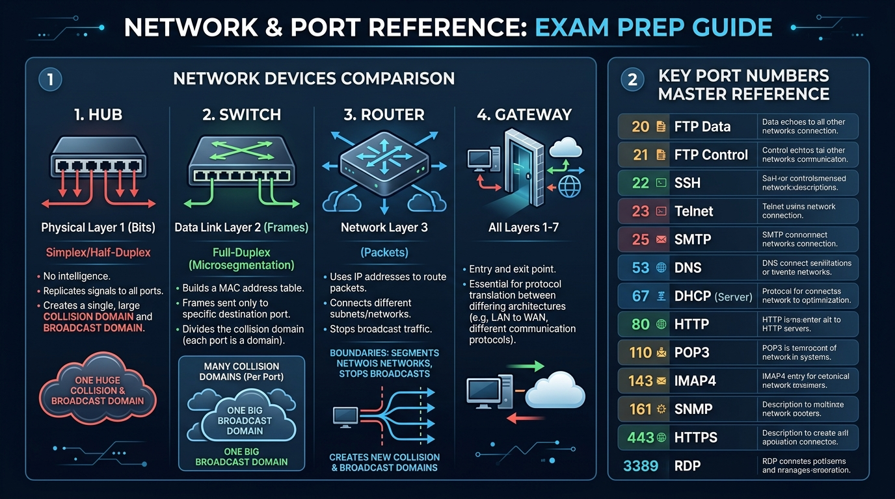

Master device comparisons (Hub, Switch, Router, Gateway), collision vs broadcast domains, and the complete 40+ high-yield Port Numbers reference table for IBPS SO IT.
| Device | OSI Layer | Addressing / Table Used | Collision Domains | Broadcast Domains | Duplex Mode |
|---|---|---|---|---|---|
| Repeater / Hub | Physical (Layer 1) | None (Bits broadcasted to all ports) | 1 Single (Shared by all ports) | 1 Single | Half-Duplex |
| Bridge / Switch | Data Link (Layer 2) | MAC Address Table (CAM Table) | Separate per port (N ports = N collision domains) | 1 Single (Unless VLANs configured) | Full-Duplex |
| Router | Network (Layer 3) | IP Routing Table | Separate per port | Separate per port (Breaks broadcast domains!) | Full-Duplex |
| Gateway | Layers 4 through 7 | Protocol Mapping / Translation | Separate per port | Separate per port | Full-Duplex |
| Port Number | Protocol | Transport | Primary Service / Function | Exam Frequency |
|---|---|---|---|---|
| 20 | FTP Data | TCP | FTP data transfer. | ⭐⭐⭐ High |
| 21 | FTP Control | TCP | FTP command & authentication control. | ⭐⭐⭐⭐ Very High |
| 22 | SSH / SFTP | TCP | Secure Shell remote login & encrypted file transfer. | ⭐⭐⭐⭐⭐ Critical |
| 23 | Telnet | TCP | Unencrypted plain-text remote terminal CLI. | ⭐⭐⭐⭐⭐ Critical |
| 25 | SMTP | TCP | Simple Mail Transfer Protocol (Mail sending/relay). | ⭐⭐⭐⭐⭐ Critical |
| 53 | DNS | UDP / TCP | Domain Name System resolution (UDP for queries, TCP for zone transfer). | ⭐⭐⭐⭐⭐ Critical |
| 67 | DHCP Server | UDP | DHCP Server listening port. | ⭐⭐⭐⭐ High |
| 68 | DHCP Client | UDP | DHCP Client receiving port. | ⭐⭐⭐⭐ High |
| 69 | TFTP | UDP | Trivial File Transfer Protocol (lightweight). | ⭐⭐⭐⭐ High |
| 80 | HTTP | TCP | Hypertext Transfer Protocol (Web). | ⭐⭐⭐⭐⭐ Critical |
| 110 | POP3 | TCP | Post Office Protocol v3 (Email download & delete). | ⭐⭐⭐⭐⭐ Critical |
| 123 | NTP | UDP | Network Time Protocol (clock sync). | ⭐⭐⭐ High |
| 143 | IMAP | TCP | Internet Message Access Protocol (Email sync across devices). | ⭐⭐⭐⭐⭐ Critical |
| 161 | SNMP Poll | UDP | Simple Network Management Protocol queries. | ⭐⭐⭐⭐ High |
| 162 | SNMP Trap | UDP | SNMP unsolicited alert traps. | ⭐⭐⭐⭐ High |
| 389 | LDAP | TCP / UDP | Lightweight Directory Access Protocol. | ⭐⭐⭐ High |
| 443 | HTTPS | TCP | HTTP Secure (TLS encrypted web traffic). | ⭐⭐⭐⭐⭐ Critical |
| 445 | SMB | TCP | Server Message Block (Windows file sharing). | ⭐⭐⭐ High |
| 465 / 587 | Secure SMTP | TCP | Encrypted SMTP (SMTPS / Submission). | ⭐⭐⭐⭐ High |
| 993 | IMAPS | TCP | TLS Encrypted IMAP. | ⭐⭐⭐⭐ High |
| 995 | POP3S | TCP | TLS Encrypted POP3. | ⭐⭐⭐⭐ High |
| 1433 | MSSQL | TCP | Microsoft SQL Server Database. | ⭐⭐⭐ High |
| 1521 | Oracle DB | TCP | Oracle Database Listener. | ⭐⭐⭐ High |
| 3306 | MySQL | TCP | MySQL Database Server. | ⭐⭐⭐⭐ High |
| 3389 | RDP | TCP / UDP | Remote Desktop Protocol (Windows). | ⭐⭐⭐⭐⭐ Critical |
| 5432 | PostgreSQL | TCP | PostgreSQL Database Server. | ⭐⭐⭐ High |
| 6379 | Redis | TCP | Redis in-memory database store. | ⭐⭐⭐ High |
